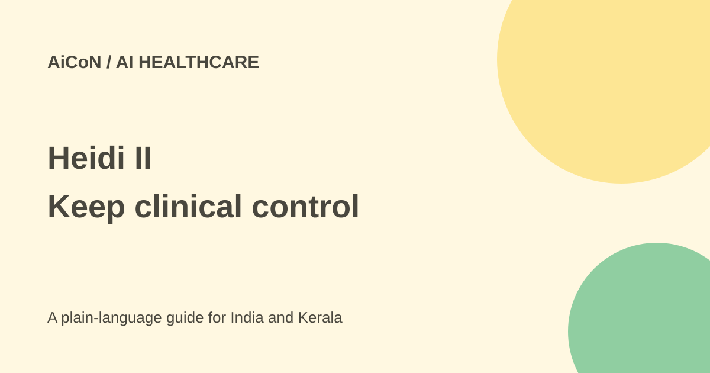

Heidi II: clinical agents, review controls and rollout limits
Heidi II adds clinical and administrative agents around patient visits. It is software for care teams, and access, patient-data handling and approval settings need checking before use.

What is new in Heidi II?
Heidi's launch page describes an agentic layer across a clinician's calendar, inbox and portals. It gives examples such as pre-charting a ward round, finding pathology results, completing referral forms and drafting handover letters. These examples explain the product's intended work; they do not prove it can access every hospital system.
A Home view brings scheduled patients and tasks together. Saved tasks can become Routines that run on a schedule. Memory learns formatting preferences and corrections, while research features bring cited medical material into the workflow. A citation still needs checking for relevance to the actual patient and decision.
Manual mode is the starting point
The official page says Heidi starts in Manual mode. By default, work touching a chart, reaching a patient or leaving the system waits for review, and a user can stop a run. It also says users can switch to Auto mode for tasks they trust.
This means the original "not an autopilot" wording needs care. Human responsibility remains, but it is not accurate to promise that every action always needs an individual approval in every mode. Understand the exact settings and allowed task before changing modes.
The company says Heidi will not prescribe, delete a record or submit a claim in any mode. That is a documented product boundary, not a reason to skip review of the work it can do. An incorrect note, referral or patient message can still cause harm.
Is it available in India?
The current US launch page, dated 1 October 2026, says rollout is in English, with more languages to follow. It says Heidi II is coming to Asia and the Middle East and is not available in the EU and UK. A separate regional announcement uses a 29 September rollout date and mentions English and French.
These statements do not establish that every Indian account has the agent features today. Check your account and ask the provider about your region, language, clinical setting and integrations. Do not treat the availability of ordinary Heidi scribing as proof that the new agents are enabled.
Free plan versus agent usage
Heidi has a Free route, and its official pricing material describes free standard-template transcription and notes. Agent and advanced-feature limits are separate from unlimited basic scribing.
The checked pricing sources are not fully aligned. The public pricing material describes Free weekly trial allowance and paid monthly agent capacity, while the help page describes older plan names and ten shared monthly actions for some Free features. Do not assume a single allowance covers every account or Heidi II rollout. Read the current limit shown in your account and confirm paid terms before relying on it for a clinic's workload.
The guide does not quote an unverified India price. A trial, a free seat and a paid clinical subscription are different offers. Check the billing period, usage allowance, renewal and which features are actually enabled.
How a care team should evaluate it
- Confirm regional availability and the organisation's approval to use the product.
- Review data agreements, access permissions, retention and patient-consent requirements.
- Start with a safe test workflow and Manual mode.
- Check which charts, inboxes and portals it can access.
- Review every draft for patient identity, facts, wording and the intended recipient.
- Test what happens when a task fails or a source is missing.
- Only consider recurring or automatic work after agreeing its limits and review process.
Clinical and privacy limits
Do not upload patient information to an unapproved account or use a personal login as a shortcut around a hospital's process. Memory, connected systems and scheduled work extend beyond a single note, so the team needs a clear account of what is retained and who can access it.
The company's certifications and control claims are useful starting points, not blanket proof of compliance for every country or organisation. The service does not remove a clinician's need to make and check care decisions.
What changed since the original AiCoN post?
This guide adds Manual versus Auto mode, actions excluded in every mode and the region-specific rollout wording. It also avoids calling all agent work free or universally available, because the current pricing sources and account limits need reconciliation.
Frequently asked questions
Does it prescribe medicine?
The company says prescribing is off limits.
Does Free mean unlimited agents?
No. Basic scribing and agent allowances differ.
Is India access confirmed for everyone?
No. Verify the actual account and rollout.
Sources: Current Heidi II launch page · Review-control explanation · Official pricing · Plan help, differing allowances · Privacy policy. Checked 7 October 2026.